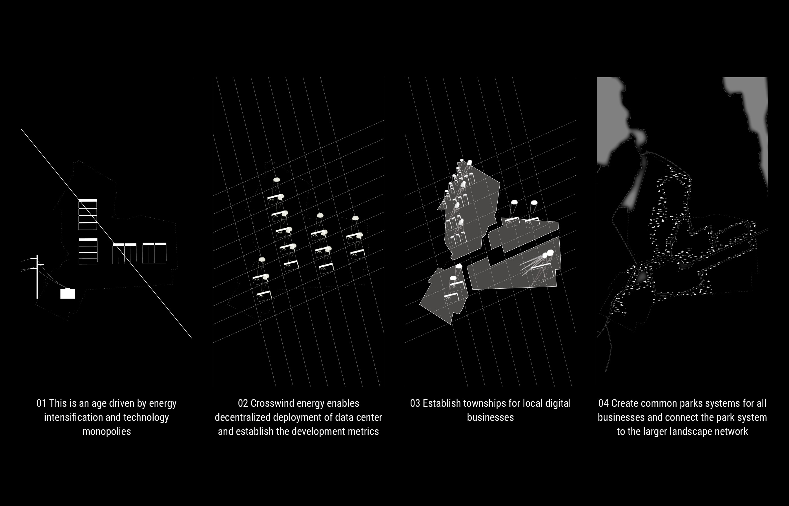

Crosswind Data Center
Info Indivual Work, 08-12/2021, Academy
Instructor Thomas Oslund, Catherine Murray
Institution Harvard GSD
Studio Publication
Crosswind Data Center Module
The contemporary age is driven by energy intensification and technology monopolies. Following the Irish government’s renewable wind energy commitment by 2030, the project proposes a self-sustaining data center module with crosswind energy. This module enables the decentralized enegy and water supply of data center, which empower a model of a self-sufficient data town.
From Nomadic Settlement and Shannon River Mosaic Landscape since Vikings
To Data Town Park System
The master plan design is based on the decentralized data town conception. The Limerick government will lease the land and establish the infrastructure, water system for each company town. The interactions, clusterings and personalities of crosswind data center towns evoke nomadic memory. Limerick's history stretches back to its establishment by Vikings as an island in the River Shannon. Ireland’s historical nomadic nature is back, but in a new form, driven by the crosswind data center.
Long Shot from a Near-by Village Askeaton
Inquire via email: yuxiny0822@gmail.com
Connect via LinkedIn: Here